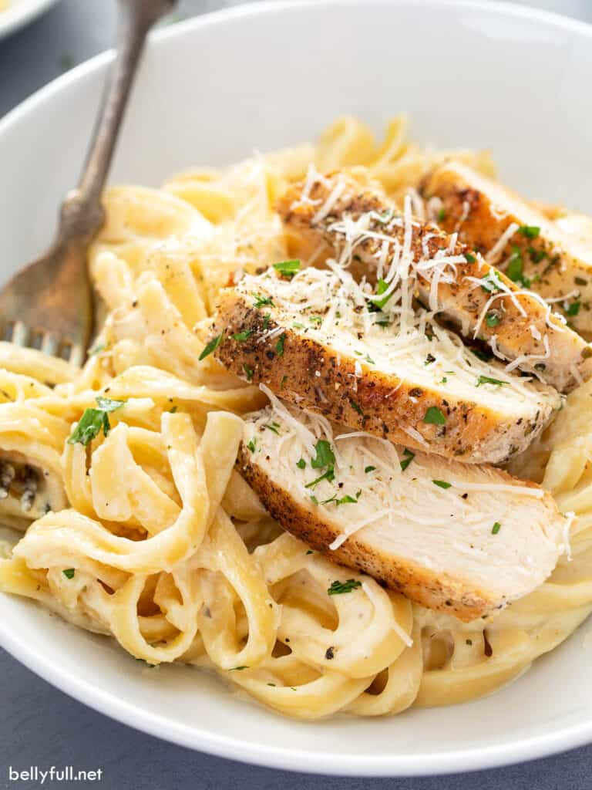

Chicken Alfredo

Description
This easy Chicken Alfredo recipe includes golden pan-fried seasoned chicken breasts and tender noodles, coated in the most dreamy cream sauce ever. A showstopper meal and it’s all done in just over 30 minutes!
Talk about comfort food! Mama Mia, you guys. We put our amazing Homemade Alfredo Sauce to perfect use in this Chicken Alfredo recipe. Wonderfully seasoned chicken with a crispy golden exterior, on top of tender pasta that’s coated with a velvety garlic and Parmesan cream sauce. What’s more, it looks and tastes like a gourmet meal, but it’s incredibly easy to make. Trust me, your entire family will love it!
Ingredients
- 16 ounces dry fettuccine patsta
- 1 pound boneless, skinless chicken breast
- 1 teaspoon Italian seasoning
- 3/4 teaspoon kosher salt
- 1/4 teaspoon pepper
- 2 tablespoons extra-virgin olive oil
- 1 tablespoon butter
- 1 jar of Ragu Alfredo sauce
Instructions
- Make the noodles. Bring a large pot of salted water to a boil. Add the fettuccine and cook until al dente according to package directions, usually 10 minutes. Reserve 1/2 cup of the cooking water, then drain well. Set aside.
- Make the chicken. Season the chicken breasts with the italian seasoning, salt, and pepper.
- Warm the olive oil over medium-high heat in a large nonstick skillet. Once it's shimmering, swirl the pan to evenly distribute. Add the chicken and leave it undisturbed for 5-7 minutes, until the bottom is golden-brown. Flip over and add in 1 tablespoon of butter between them, picking up the pan to give it a gentle swirl to distribute. Continue cooking for another 5-7 minutes (or an internal temperature reaches 165 degrees F.)
- Transfer the chicken to a cutting board and let rest for 3 minutes. Cut into 1/2-inch-thick slices.
- Combine the noodles, chicken, and sauce and serve! Be careful, it may be Hot!